Studio of Body design
FAMILY for All 2024
The work FAMILY for All explores the themes of queer families and hate culture on social media. The central visual element of the piece consists of two boxes, each representing a different facet of this issue. One symbolizes a hopeful future and contains photographs of the artist's fictional family created with artificial intelligence. The other depicts a somber past, illustrated by homophobic comments from social media and examples of bias in artificial intelligence.
The photographs were generated using the AI tool MidJourney. They portray the artist's imagined future family—his children, Timmy and Olaya, along with his husband. However, the artist encountered an intriguing challenge during their creation: the AI frequently replaced two fathers with a combination of one father and one mother, revealing deeply ingrained stereotypes within its algorithm.
The homophobic comments were collected over a semester from platforms such as X, Instagram, TikTok, and Facebook. These comments were intentionally removed from their original context to reflect how young queer individuals may perceive hate speech online. Stripped of broader context, these messages amplify their emotional impact, underscoring the horror of the content itself.


Inheritance of the Butchering Slaughterhouse 2024
The hunting season is coming!!!
Ravenous vultures gaze toward their ancestral homes. Dwellings of their forebears, who become mere scraps of flesh lost to oblivion. The last chocolate melts in the grandchild's hand, buried in grandma's purse. And the space echoes with the final reverberations of the ravenous beasts.
 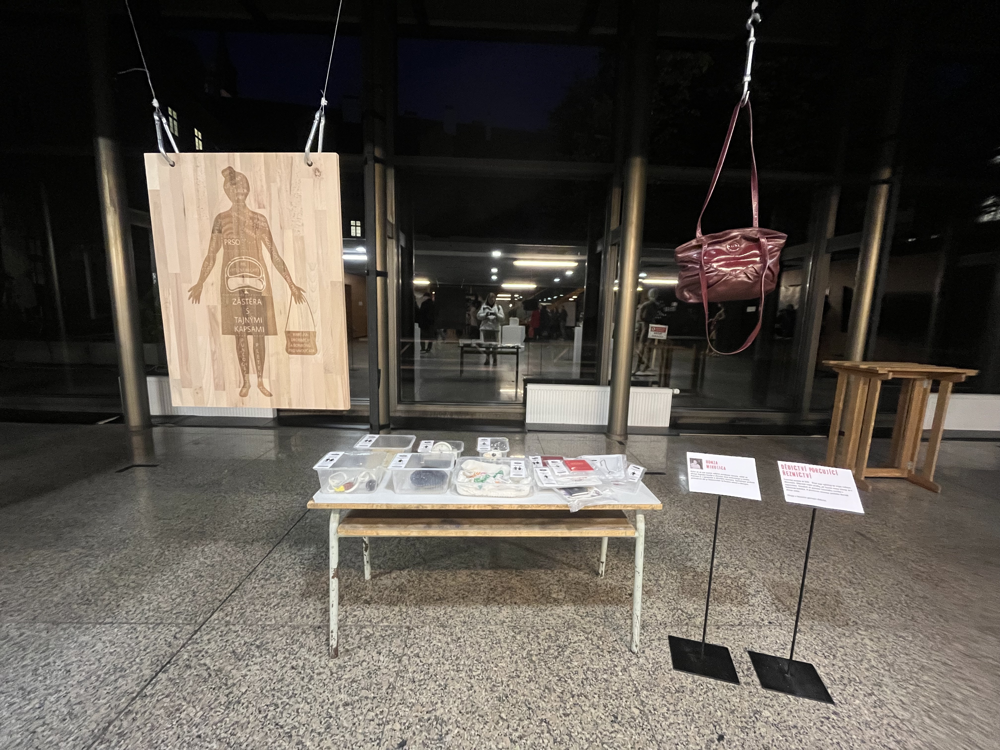
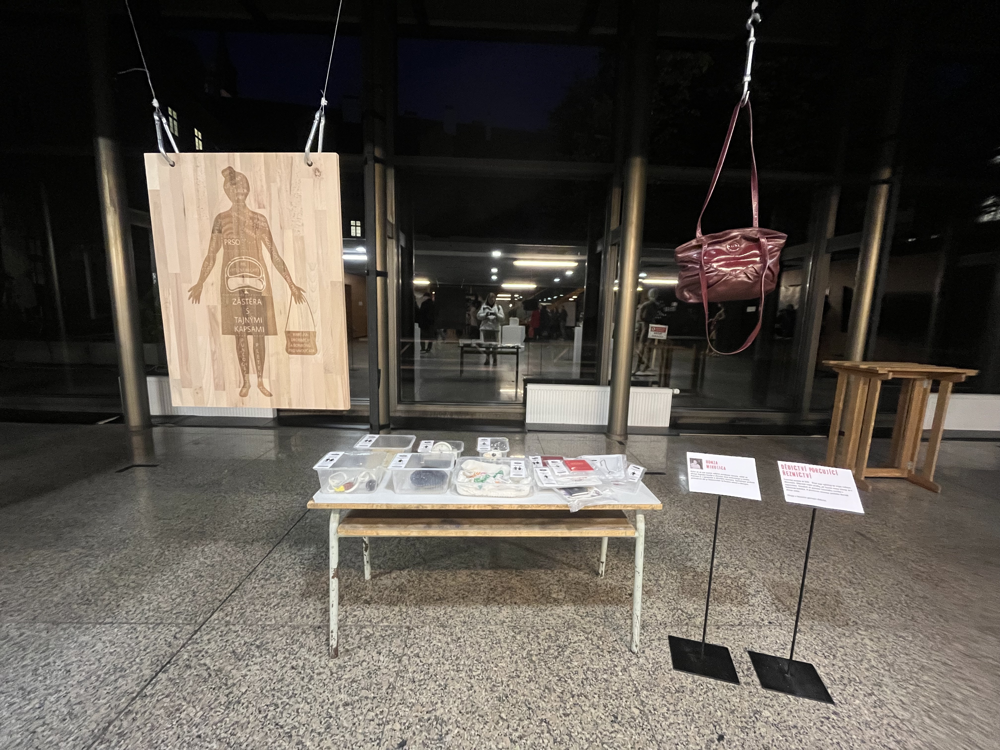
{kind=link}

Ragnarök 2022
My project Ragnarök shows a couple of scenes from the story of Ragnarök: The Final Fate of the God. It was processed with the help of A.I. (Artificial Intelligence) in the program which is called MidJourney. The final goal of this project was to explore the visuals of works from Norse mythology that were not still in existence these days or were not known. This may have been due to the lifestyle of the Northerners who were the raiders who occupied new places. The first pictorial references did not appear until the 19th century. We would not know that if the translation of the old stories from Old Norse to English did not come out. After a while, the artists could begin to process the stories.
As a part of the project, I made a VR video showing the final works created by the A.I. generator. The video retrospectively goes back from the final work through different variants of the works, for which I selected from four different image sources. The works are connected with the texts, which were used as input for the result of the image. At the end, the video goes back to the opening phrase. Speaking of which the first version of the work was created due to the opening phrase. The inscription of the Ragnarök story ends the whole project at the final point.
The intention was therefore to speculate on the visual side of Nordic art from the period and to explore artificial intelligence as a tool enabling the creation of works from a large database of image sources. It was interesting to see how artificial intelligence deals with the names such as Thor, Loki, and Odin... popularized by the Marvel studio in their films about the superhero god. Another variant that seemed interesting was to investigate how the artificial intelligence would deal without the mentioned names and only with the description of the plot and the insertion of the tag of Norse mythology. Eventually, I realized that I, as a born Czech, who has no roots in the culture of Norse mythology, can not be the one who will reproduce works based on Norse mythology motives. Speaking of which, that is the reason why the project becomes my subjective selection of the topic. Moreover, I enable the A.I. generator to create motives from Nordic mythology, as the generator has an extensive database of people of different cultures, so there can be a much better connection with the roots of the Nordic nation.
A VIEW FROM THE EDGE OF A PASTURE (SYMPOSIUM) 2022
The performance was part of the program of the international multidisciplinary symposium entitled A VIEW FROM THE EDGE OF A PASTURE curated by Edith Jeřábková and Denisa Langrová. The symposium is part of the year-round program entitled A Plant by Kunsthalle Bratislava curated by Lydia Pribišová. The workshop and the lecture are part of the Art Connected 2022 - 2021 series intended by transit.sk
This piece has been done by a collective from the Studio of body design from the Faculty of fine arts in Brno. The performance was based on the concept of the constant moving of sheep and shepherds because of the need for new soil and grass. The act of felting the wool into the ground could be a metaphor for various connections to pasture: the need of rooting in the age of disconnection, colonialism, (mis)use of resources, our need to leave something behind, find a right place or capitalistic need to produce and then leave without responsibility.
The performance started as a search for „the right“ place to start, then it continues rooting with the use of wool. We carried the wool in a square piece of cotton clothing, later using it as an apron. In the pile of wool was a person standing, reciting her poem and we were repeating it as a choir in an attempt to create a meditative chant while felting the wool into the ground and repeating the poem in a loop.
Photo: Jamie Hrabců and author archive


Me Vs. Putin 2022
As part of my performance at the New Synagogue in Žilina, I decided to reflect on the situation of Russia's attacks on Ukraine, which occurred in 2022. Therefore, in my performance, I created portraits of Russian President Vladimir Putin. At the same time, I wanted to depict the social and political injustices that are present in Russian society and politics. The specific, characteristically different portraits are depicted using colors that can identify these problems. The main issues I depicted were Russia's attack on Ukraine, LGBT rights in Russia, disinformation, oligarchs that influence the running of Russia, relations with China, and nuclear weapons. The portraits were created using pastels on A3-sized paper, and then they were assembled into a dove, which symbolizes peace.
Photo: Karolina Kohoutková and author archive
 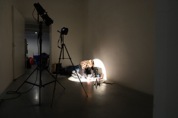
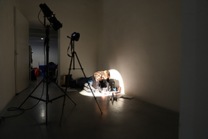
{kind=link}
 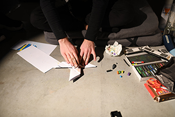
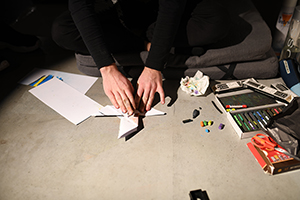
{kind=link}


My little abortion 2021
In my exam project, I decided to focus on the topic of abortions, which are heavily debated in Poland, Slovakia, Hungary, America, and other countries. I got the first idea to explore this topic at a protest in Prague in front of the Slovak embassy, where the thought arose that even though abortions are not banned here, a similar situation could still occur. Throughout the semester, we also dealt with the topic of witchcraft, and here I discovered a connection between how they were oppressed in the past and how they are oppressed today, as people try to take away their rights to abortions. The exam project is meant to draw attention to this problem, so I created a series of figurines. These figurines are made of clay and plaster. I always used a part of a toy baby's body as the base, which I then connected with clay or plaster. At first, I made them using clay, but later I also started using plaster, which I discovered was a new way of using it. Since I usually poured plaster into objects to create a certain shape, the result was often surprising compared to clay, where I could create the entire torso as I imagined it. However, my personal breakthrough came when I was making a sculpture where I poured plaster over the entire body of the baby and then carved it out with a chisel. This sculpture was very exhausting and time-consuming. It was like giving birth, and people around me started to liken this sculpture to childbirth, which is why I decided to call it "unfinished birth". The figurines are displayed in an enclosure that represents a children's corner. The enclosure is made of a net, on which newspaper articles related to cases and events related to abortions are hung.


 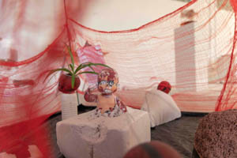
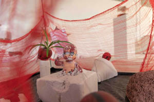
{kind=link}

Joints 2021
The performance took place on the premises of the disabled center, which has a varied history of caring for the disabled. As a result of the fact that a lot of disabled people could have various dysfunctions, I decided to explore for myself in these spaces what it must be like to function with some kind of limitation. That's why I fixed my joints with various objects, plaster bandages, and prepared canapés for all the guests. However, it turned out to be much more difficult than it might seem. I had never worn a cast before in my life and it was the first time I had used plaster casts. So from the very beginning, it was a challenge to use plaster casts and fix yourself properly. As I figured it out, another snag awaited me, and that was fixing my hands. The first hand went well, the follower already helped me with the second hand. During the entire performance, I felt like a child, as I had to learn to do ordinary things in this condition and discovered new ways. Thanks to this, I was able to experience what it's like, live with obstacles in life and adapt to the given things.

 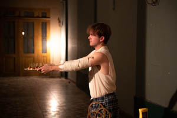
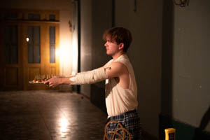
{kind=link}

 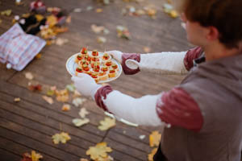
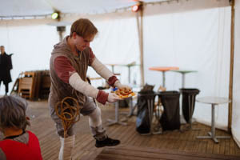
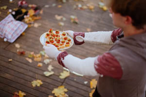
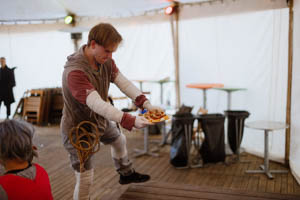
{kind=link}
{kind=link}